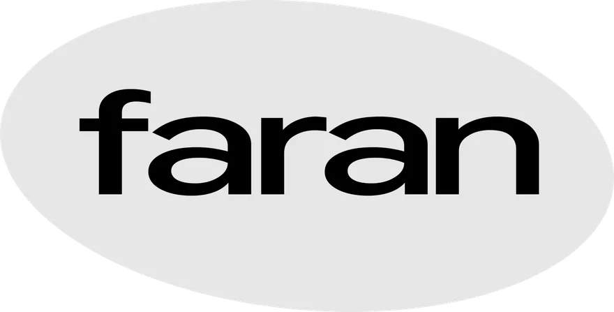

Contact

장면마다 가진 고유한 질감을 살리고, 이야기의 흐름에 어울리는 색을 만듭니다.
저희는 장면의 의도와 이야기의 흐름을 이해하고, 영상이 가진 분위기와 질감을 살리는 데 집중합니다.
단편영화부터 커머셜, 뮤직비디오, 패션필름, 전광판 영상까지 다양한 분야에서 작업해왔습니다. AI 푸티지와 빈티지 캠코더로 촬영한 영상 등 폭넓은 소스를 다루며, 각 이미지의 특성에 맞는 작업 방식을 찾아왔습니다.
정해진 스타일을 입히기보다는 각 영상에 어울리는 색을 찾고, 개별 장면의 매력이 전체 흐름 안에서 자연스럽게 이어지도록 다듬습니다. 함께하는 이들과 충분히 소통하며 작업의 방향을 구체화하고, 최종 결과물에도 의도한 색과 분위기가 온전히 담기도록 작업합니다.
좋은 인연으로 만나 서로의 생각을 나누고, 오래 기억에 남을 작품을 함께 만들어가길 바랍니다.
- Name정준호
- Phone
- Instagram@zngzh